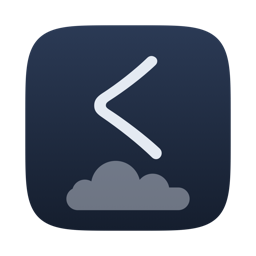

Kodama
Une application de streaming de Web Radio pour la barre des menus. Elle lit vos stations, enregistre les morceaux diffusés, et vous laisse choisir ceux à sauvegarder.
macOS 14+ · gratuit
Kumoji
Vos stockages distants montés en volumes locaux, depuis la barre des menus. Une seule empreinte pour toute une session de travail, et rien à installer dans le système.
macOS 13+ · gratuitD'autres arrivent.